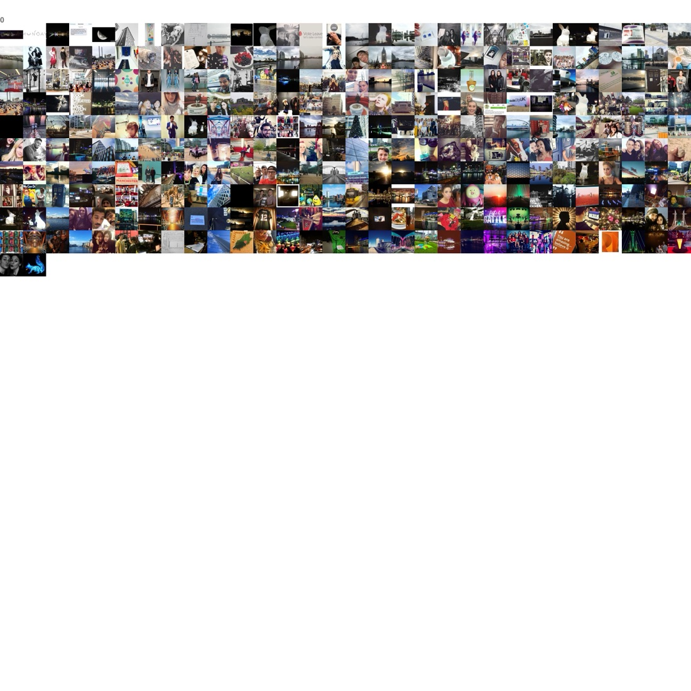

MediaCityUK Activity Analysis
MediaCityUK was built as a new media and cultural quarter for Salford — but does its amenity mix match how people actually use the area day to day? This study set supply against demand to find out.
A research collaboration with the University of Salford, using SPIN Unit’s “Urban Activity Wheel” classification (Necessary/Optional activities across ten categories) applied consistently across Greater Manchester so MediaCityUK could be benchmarked against the wider city region.
Foursquare venues (supply) and roughly 9,200 geotagged Instagram photos plus Twitter activity (demand) were both classified into the same ten-category framework. Accessibility was measured via network-distance isochrones at 400m, 600m, 1200m, and 6000m per category, and urban complexity was scored with a Shannon-Wiener diversity index — an ecological measure borrowed from prior academic use in studying Spanish tourism cities.
A short-turnaround research brief (summer 2017), explicitly noted in the report as data-collection-limited to the summer period.
{kind=link}

Open full size ↗